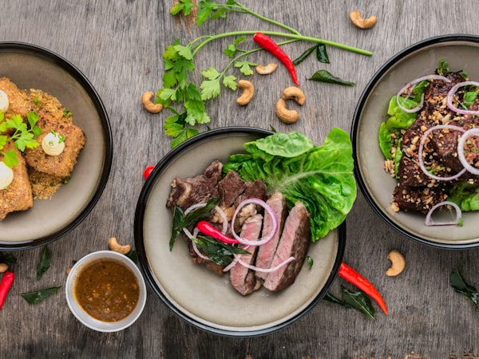
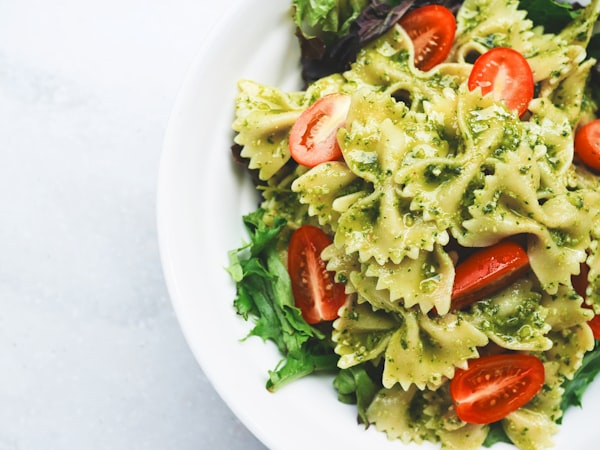
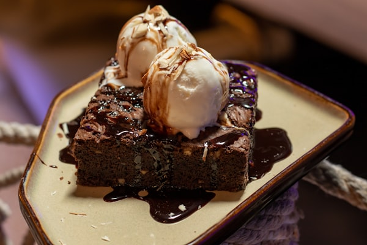

Izdvajamo iz menija
Najpopularnija jela koja nasi gosti obozavaju.

Biftek na zaru
Premium junetina sa grilanim povrcem i umakom od crnog vina
28 KM

Domaci ravioli
Rucno pravljeni ravioli punjeni sirom sa tartuf umakom
18 KM

Filet brancina
Svjezi brancin sa mediteranskim zacinima i mladim krompirima
24 KM

Cokoladni fondant
Topla cokoladna lava torta sa kuglom vanila sladoleda
10 KM